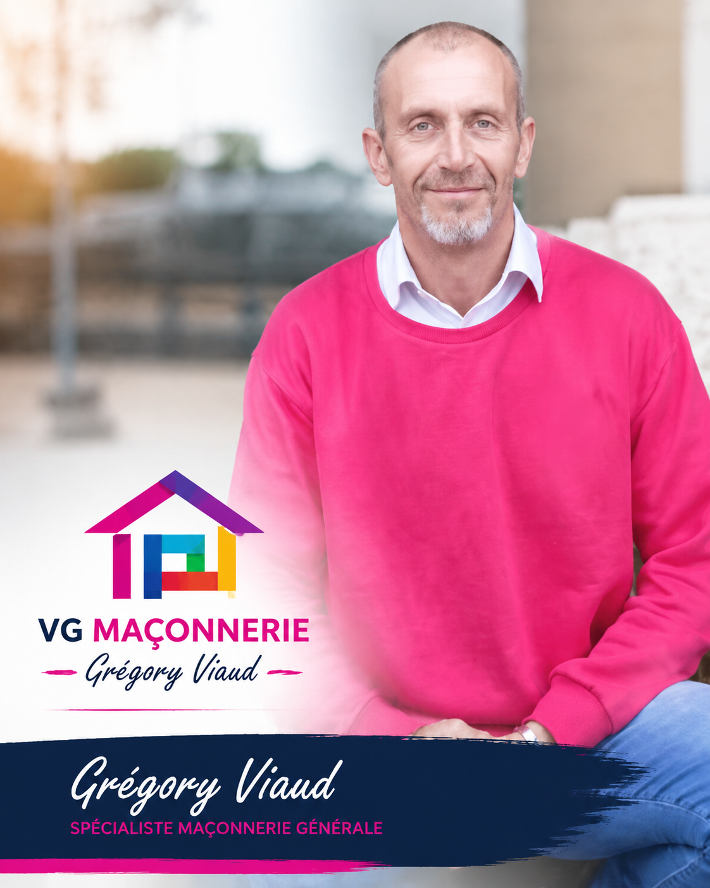
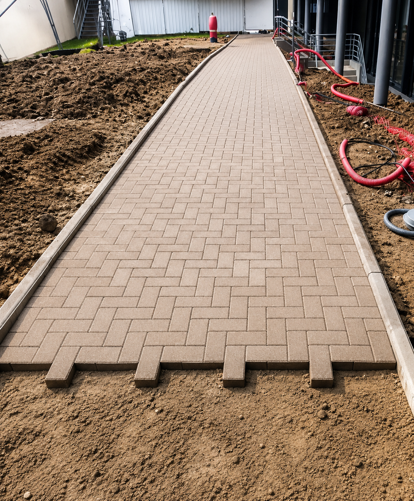
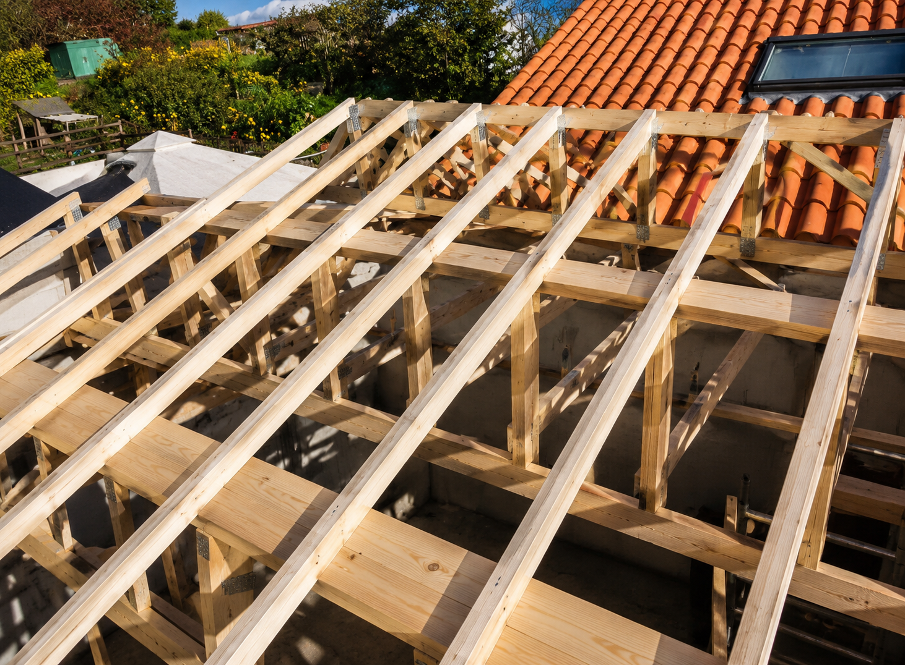
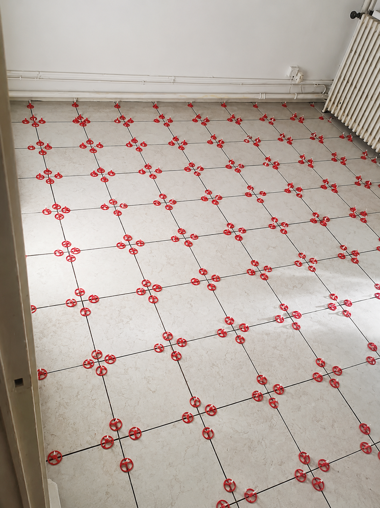
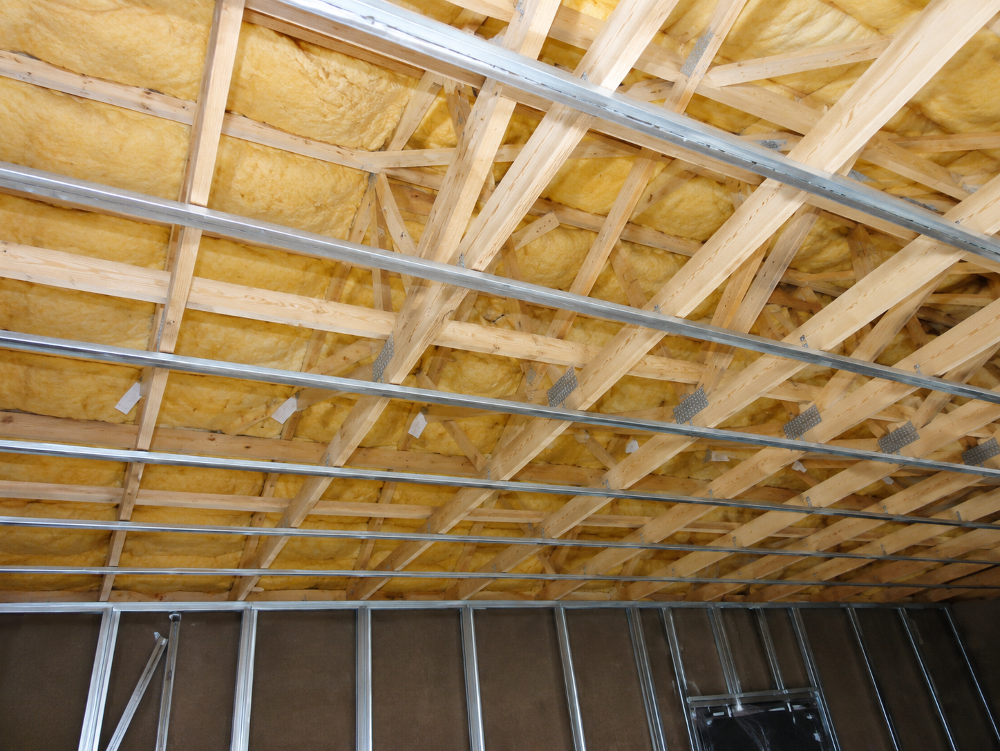
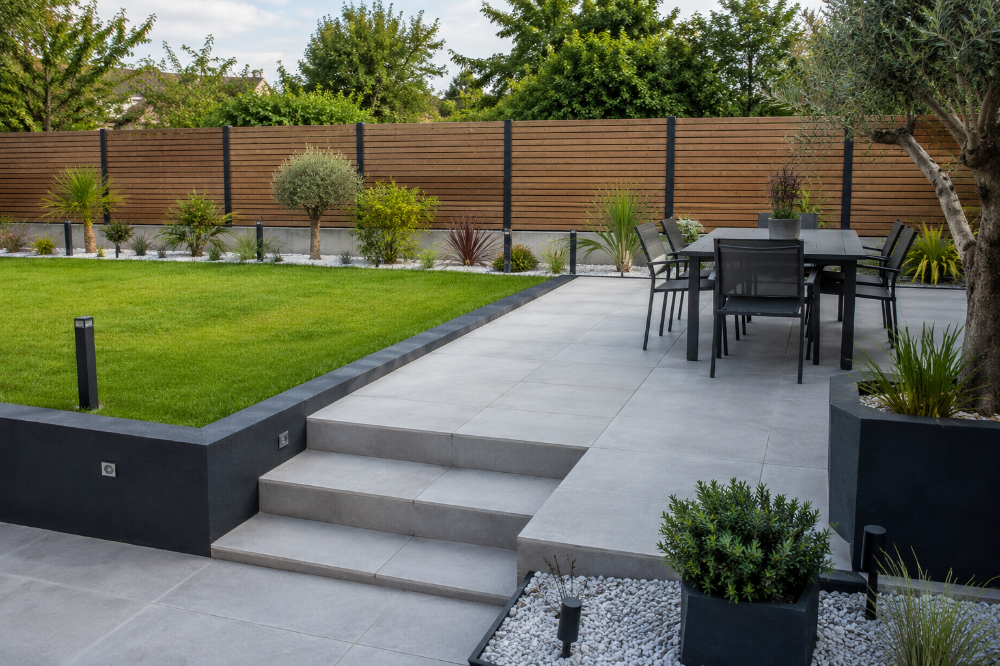
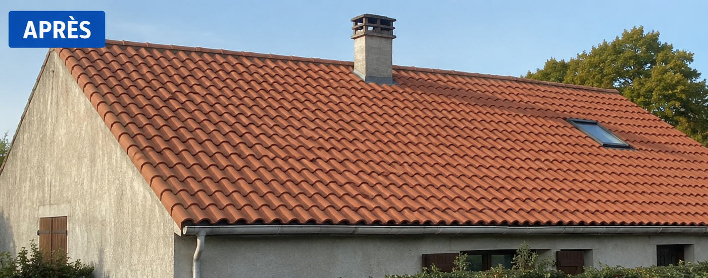

🧱
Maçonnerie générale
Murs, fondations, extensions, reprises et travaux structurels.
Grégory Viaud accompagne vos projets de maçonnerie générale, rénovation, toiture, charpente, carrelage, pavage, isolation et aménagement avec une approche sérieuse, précise et durable.

Un interlocuteur de confiance pour vos travaux neufs, rénovations, aménagements et finitions.
Murs, fondations, extensions, reprises et travaux structurels.
Création, transformation et remise en état de bâtiments existants.
Travaux de toiture, charpente traditionnelle et couverture.
Sols, murs, terrasses, cours, entrées et aménagements extérieurs.
Solutions intérieures et extérieures pour confort et économies d’énergie.
Cloisons, plafonds, doublages et aménagements intérieurs.
Une méthode claire pour cadrer, produire et livrer chaque projet dans de bonnes conditions.
Analyse du besoin, conseil, faisabilité et définition du projet.
Choix des matériaux, organisation chantier et anticipation technique.
Mise en œuvre par corps de métier, avec précision et maîtrise terrain.
Suivi régulier, ajustements et vérification de la qualité d’exécution.
Finitions, réception chantier et accompagnement après travaux.
Quelques exemples de chantiers : toiture, charpente, carrelage, pavage et aménagement extérieur.

Pavage & dallage
Charpente
Carrelage
Isolation
Aménagement extérieurUn espace prévu pour montrer l’évolution réelle des chantiers, de l’état initial jusqu’au résultat final.

• Analyse de l’existant.
• Ancienne couverture vieillissante.
• État du support.
• Contraintes techniques.
• Préparation du chantier.
• Structure à reprendre.
• Isolation à optimiser.
🔨 Préparation et sécurisation.
🔨 Reprise de charpente.
🔨 Contrôle de l’alignement et des finitions.
🔨 Pose soignée des matériaux.

✅ Toiture neuve.
✅ Meilleure protection thermique.
✅ Esthétique durable et valorisation du bien.
✅ Résultat final.
✅ Finitions propres.
✅ Chantier livré.
✅ Accompagnement client.
Chez VG Maçonnerie, chaque chantier est réalisé avec précision,
expérience et exigence du travail bien fait.
🔨 Artisan expert depuis plus de 30 ans dans le bâtiment.
📞 06 22 19 09 59
📍 VG Maçonnerie | Grégory Viaud
Zone prévue pour intégrer les vrais avis Google ou les retours clients validés par Grégory.
Travail sérieux, chantier propre et résultat conforme aux attentes.
Client rénovationBon conseil, réalisation soignée et accompagnement clair du début à la fin.
Client toitureArtisan réactif, précis et disponible pour expliquer les étapes du chantier.
Client aménagementVG Maçonnerie vous accompagne de l’idée à la réalisation, avec un savoir-faire de terrain, une vision claire du chantier et le goût du travail bien fait.
Appeler maintenantFacebook : Grégory Viaud
SIRET : 94433443200019
Activité : Maçonnerie générale, neuf & rénovation